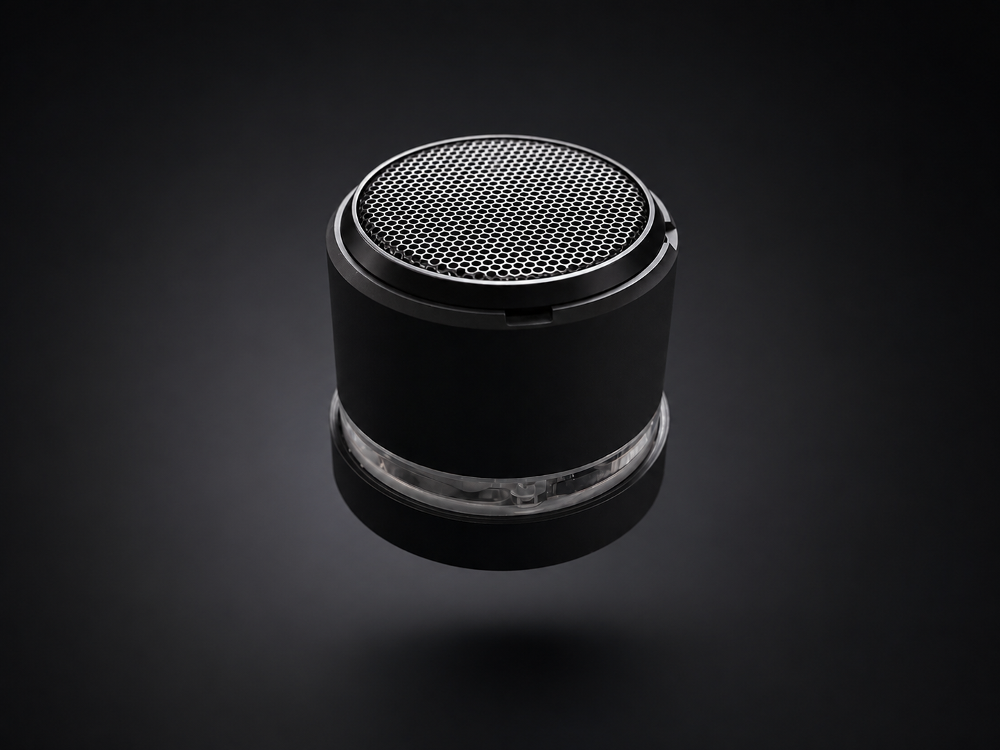
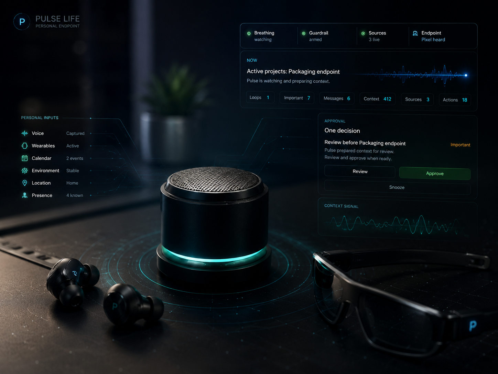

Orchestration core
Pulse Life
Behavioural intelligence, contextual weighting, open-loop detection, private voice delivery, and approval-gated assisted communication.
Orchestration core
IronWoodCo Digital Intelligence designs and deploys locally sovereign AI systems that quietly reduce friction across life, environment, communication, and digital presence.
Most AI products are built around prompts, dashboards, automations, or notifications. Pulse is built around continuity: context remembered over time, behaviour interpreted carefully, and delivery judged by usefulness rather than noise.
Pulse Life is the orchestration core. The surrounding systems extend the same principles into public publishing, local loops, music, viewing, and collection intelligence.
Behavioural intelligence, contextual weighting, open-loop detection, private voice delivery, and approval-gated assisted communication.
Active site management, narrative continuity, publishing orchestration, SMM support, and approval-gated outbound communication.
Voice input, local processing, NAS-backed memory, Pulse UI, and private voice output arranged as a locally sovereign operating loop.
Context-aware music intelligence across rooms, routines, queues, listening patterns, and voice interaction.
Discovery-first media intelligence for Plex, mood search, watch-state continuity, and contextual recommendations.
Artist-led vinyl collection intelligence combining Discogs, MusicBrainz, Spotify, ownership data, and acquisition priority.
A useful intelligence layer has to exist where life already happens: rooms, devices, music systems, communication channels, local servers, and private voice endpoints.

Fixed household interaction points with room context and ambient state.

Personal prompts through an owner-only channel, not household broadcast.

Presence, room state, media, lighting, and routine signals become context.

Voice input, local processing, owned memory, and private output in one controlled loop.
Pulse does not simply fire rules. It weighs timing, context, previous behaviour, urgency, and the cost of interruption before deciding whether to speak, prepare, hold, or stay silent.
A quote was received. No reply was sent. Pulse notices the absence and waits for a useful moment.
A film is playing. Interruption tolerance is low. Non-urgent delivery is held.
A draft can be prepared, read back, edited, and approved. Nothing is sent autonomously.
Household context changes when visitors are present. Personal prompts remain private.
Dismissal is treated as signal. Timing, wording, and future surfacing adapt.
The LLM is not the intelligence. It is a language and interpretation tool inside a larger architecture of memory, context, continuity, judgement, and restraint.
Pulse Publish extends the same contextual philosophy into active site management, SMM, digital presence, narrative continuity, and approval-gated publishing.
Pulse Publish is designed to manage public presence as an evolving system: knowing what has already been said, what needs continuity, what should wait, what requires approval, and which channel fits the moment.

Each deployment is configured around the owner, their environment, their infrastructure, their communication patterns, and the degree of autonomy they are comfortable allowing.
Rooms, devices, servers, network, voice endpoints, media systems, and existing automation layers.
Integrate local signals, Home Assistant state, communication sources, and owner-approved data flows.
Establish timing, interruption thresholds, approval gates, personal channels, and first open-loop models.
The system learns through use, but autonomy expands only through explicit approval and proven reliability.
The goal is not more notifications. It is contextual intelligence that quietly reduces friction before life turns into admin.
Exploratory deployments are bespoke. The starting point is not a subscription form; it is understanding the environment, the owner, and the problems worth removing.